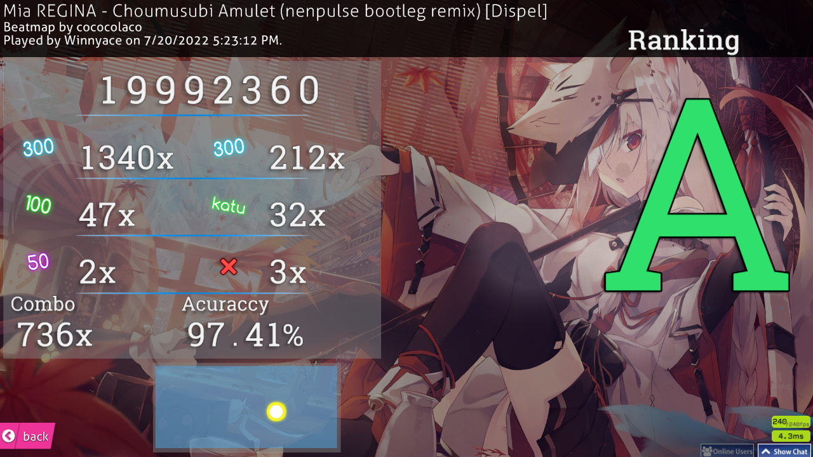
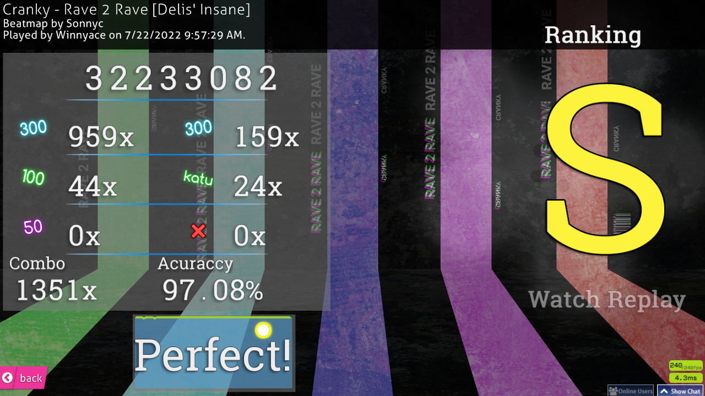
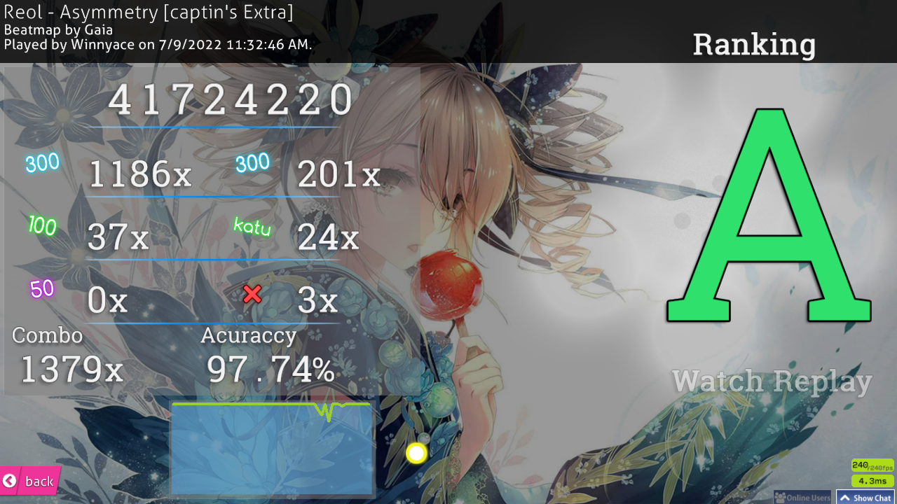

Hi! This is the second week of my osu! improvement journey some nice things have happened, but it’s yet another, sort of, lazy week. Let’s begin!
On Monday and Tuesday, I didn’t play at all. no excuse, really. Just laziness.
On Wednesday, I played for the first time this week. it was pretty good day I got two HR scores. Admittedly, they’re quite boring scores, but I think it’s a step in the right direction when it comes to HR. both are done on Best FriendS by sahuang. What can I say? I like the song :D
Click here for the first replay
Click here for the second replay
I’ve also played a tech, I guess I can call it, map. It’s a pretty fine score, I think.
 I also got a score on a Non Non Biyori DNB Remix. It’s a 54 seconds map, but has CS6 and it’s a stream map. I’ll take that.
 I’ve also played a bit of DT on Hidamari Days. Below you’ve the score in video form.
I’ve also played a bit of DT on Hidamari Days. Below you’ve the score in video form.
Admittedly, these scores aren’t something impressive, but I believe it’s the step towards the right direction. by this time, I still haven’t set a specific goal, however, that changed quickly.
On Thursday, I didn’t play yet again.
On Friday, I played for a bit. Nothing much, however. I got a NoMod FC on Rave 2 Rave.
 This song is jamming! Not my score, though. My accuracy is quite bad, not gonna lie.
On Saturday is when I finally got a goal: FC Asymmetry by Gaia, captin’s Extra difficulty. The map is pretty bog standard these days, I believe, but it’s a 6 star map, the song is pretty good, in my opinion, and I think I can get the FC. below you’ve the attempt I’ve done on Saturday.
You probably saw that I’ve a 1000+ combo score on this already.
 I set that score at beginning of this month. I’ve missed at the end, due to the pressure of that FC. This is something I will need to deal with. I panic when I’m close to getting a FC. I think everybody does, actually, but some keep their focus and pull through. I think I’ll try to regulate my breathing when I’m close to getting the FC. I think that’s the best solution. Trying to hyperfocus on the map will only result in bad things.
On Sunday, I didn’t play.
This ends this week. I kinda want to play osu! right now, believe it or not. See ya next week!